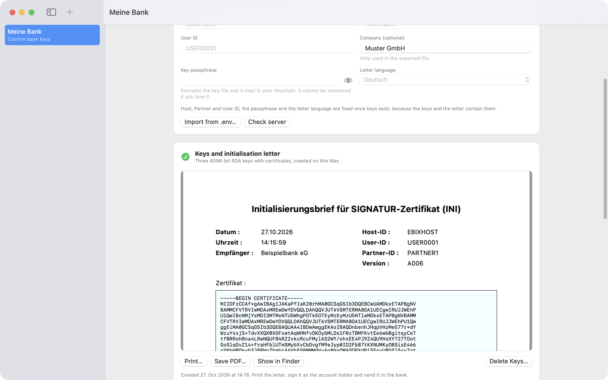
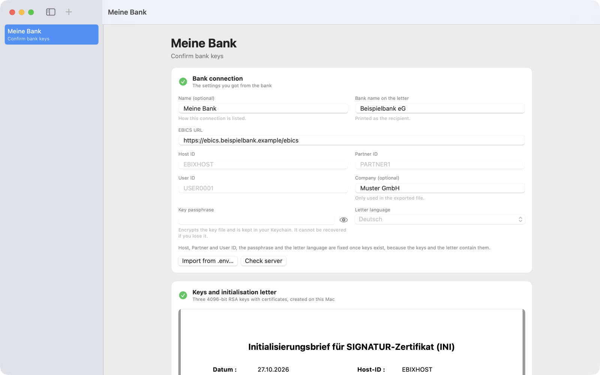
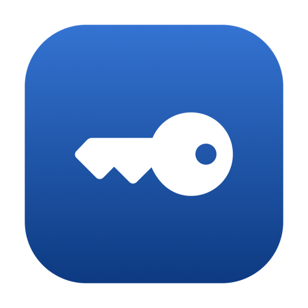
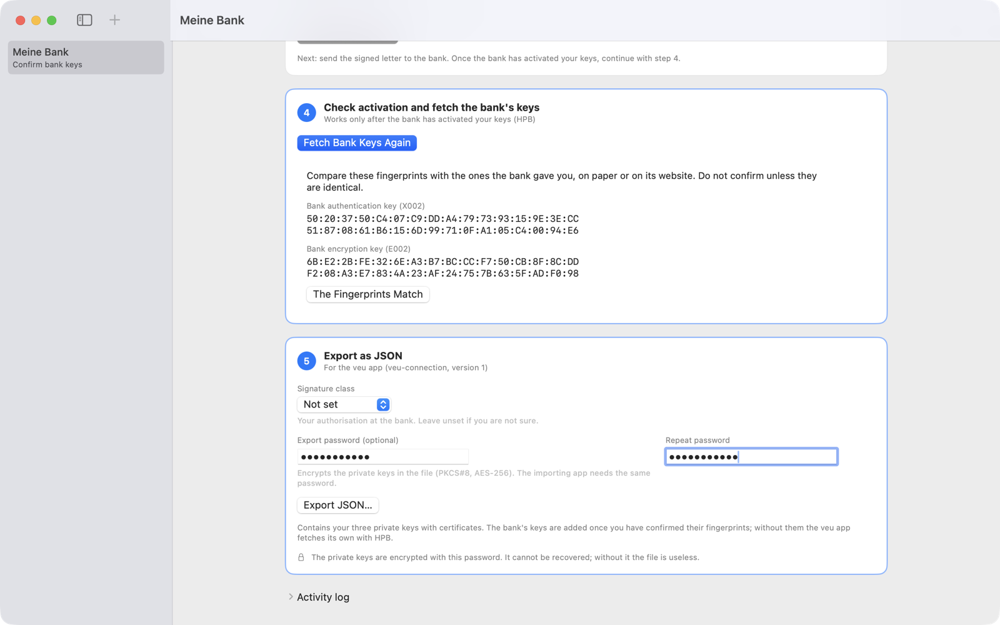

EBICS 3.0 · Ersteinrichtung auf dem Mac
Ihre EBICS-Schlüssel, in fünf Schritten bei der Bank.
Keybics erzeugt Ihre Schlüssel und den Initialisierungsbrief, meldet die Schlüssel per INI und HIA bei Ihrer Bank an und holt nach der Freischaltung die Bankschlüssel ab. Alles geschieht auf Ihrem Mac – ohne Benutzerkonto und ohne Server zwischen Ihnen und Ihrer Bank.


Ablauf
Vom Begrüßungsschreiben bis zur freigeschalteten Verbindung.
Sie brauchen nur die Zugangsdaten, die Ihnen Ihre Bank für EBICS geschickt hat. Den Rest erledigt Keybics Schritt für Schritt.
-
01
Bankverbindung eintragen
EBICS-URL, Host-ID, Partner-ID und User-ID aus dem Schreiben Ihrer Bank eingeben oder aus einer
.env-Datei übernehmen. „Check server“ prüft vorab, ob die Bank EBICS 3.0 anbietet – ohne Schlüssel zu senden.
-
02
Schlüssel und Brief erzeugen
Keybics erzeugt Signatur-, Authentifizierungs- und Verschlüsselungsschlüssel mit Zertifikaten und den dreiseitigen Initialisierungsbrief mit den Hashwerten. Drucken oder als PDF sichern.

-
03
Bei der Bank anmelden
Ein Klick sendet INI und HIA. Schlägt ein Teil fehl, sendet die App nur das Fehlende erneut. Bereits angenommene Aufträge gehen nie doppelt hinaus. Den unterschriebenen Brief schicken Sie an Ihre Bank.

-
04
Bankschlüssel prüfen
Nach der Freischaltung holt die App die öffentlichen Schlüssel der Bank (HPB) und zeigt ihre Fingerabdrücke. Sie bestätigen sie erst, wenn sie mit den Angaben Ihrer Bank übereinstimmen.

-
05
Verbindung exportieren
Die fertige Verbindung geht als JSON-Datei an Ihre Fachanwendung – auf Wunsch mit Passwort verschlüsselt.

Sicherheit und Datenschutz
Ihre Schlüssel verlassen den Mac nur, wenn Sie es wollen.
Keybics spricht ausschließlich mit dem EBICS-Server Ihrer Bank. Es gibt keinen Server des Anbieters, der Schlüssel oder Verbindungsdaten sieht.


Export
Fertig für Ihre Anwendung.
Am Ende steht eine Datei im Format veu-connection, die Ihre EBICS-Anwendung übernimmt, zum Beispiel die Unterschriftenmappe für das iPhone.
- 1Vollständig – Adresse, IDs, Ihre drei Schlüssel mit Zertifikaten und, nach Bestätigung, die Bankschlüssel.
- 2Mit Passwort – optional als verschlüsseltes PKCS#8 (AES-256), ein Standardformat. Die importierende Anwendung braucht dasselbe Passwort.
- 3Ohne Passwort – die privaten Schlüssel liegen unverschlüsselt in der Datei. Die App warnt deutlich davor.
Das Export-Passwort wird nirgends gespeichert und lässt sich nicht wiederherstellen.
Voraussetzungen
- Mac mit macOS 14 oder neuer
- EBICS-Zugang bei einer Bank, die EBICS 3.0 (H005) anbietet
- Zugangsdaten Ihrer Bank: EBICS-URL, Host-ID, Partner-ID, User-ID
- Drucker oder PDF für den Initialisierungsbrief, den Sie unterschrieben an die Bank senden
Was Keybics nicht tut
Keybics richtet die Verbindung ein und übergibt sie. Die App ruft keine Kontoauszüge ab und löst keine Zahlungen aus.
Unterstützt wird ausschließlich EBICS 3.0 (H005). Bietet Ihre Bank nur EBICS 2.x an, kann die App nicht verwendet werden.
In English
EBICS 3.0 key initialisation for your Mac.
Keybics creates your three EBICS keys and the initialisation letter, registers the keys with your bank (INI, HIA), fetches and lets you verify the bank's keys after activation (HPB), and exports the finished connection as a veu-connection JSON file, optionally password-protected. Everything happens on your Mac; the app talks only to the EBICS URL you enter. See the privacy policy and support.
Alles Weitere steht im Benutzerhandbuch.
Einrichtung, Brief, Freischaltung, Export und Fehlermeldungen – Schritt für Schritt mit Bildschirmfotos.